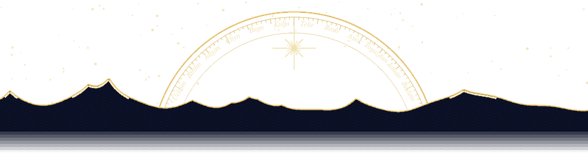
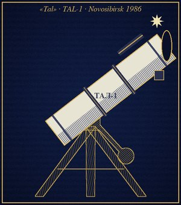

асман · the sky over Talas, 42.5° north · star names, plates, a planisphere
Asman is the sky, the word our grandmothers and the Persian poets share. This is a page about the one over Talas: what the old people called its stars, how to find them, and where to go when the city is too bright.
(the moon is worked out by a little script in your browser. no script, no moon; go outside and look.)
Talas is at 42.5° north, 72.2° east. Irad time is UTC+6, so our clocks run about 1 hour 12 minutes ahead of the sun: true midnight in Talas is at 01:12. Everything on this site says Irad time.
Most of these names we share with the Kyrgyz and the Kazakhs, from the time when everyone was on a horse at night and the sky was the only map. One we keep for ourselves. I wrote down what my grandfather Sadyr said and checked it against two books and the TSU library; where the grandfathers disagree I wrote both.
The star that does not move. The Kyrgyz and Kazakhs call it Temir Kazyk, the iron stake the sky is tied to. We call it Irad, and so is the country: the people of the star. My grandfather said both, Irad in church and Temir Kazyk with the horses. Some village chapels still turn toward it (kuble), not to the east.
The white-grey horse and the blue-grey horse, tethered to the iron stake. They walk round it all night on their rope and never get away.
The seven thieves. Every night they circle the stake to steal the two horses. When they catch them, the old people say, the world ends. They have been trying for a long time. Physics says they will need about 26,000 years and even then they miss.
From ürk-, to shy, to scatter like a startled flock. The herders' clock: when Ürkör goes into the ground in May the herds go up, when it comes back before dawn in June it is the hot time. The old month names count its meeting with the Moon.
The scales. Three stars in a straight row, the beam of a balance. In winter it comes up over the Kyrgyz Range at the hour my mother puts the kettle on for the second time.
The brightest star of the night, low in the south over the Alatau in winter. It flashes red and green near the horizon because of the air, not because of aliens (asked twice in the guestbook).
The straw-carrier's road. Someone carried straw across the sky at night and dropped it all the way. From Arjak you cannot see it at all. From Besh-Tash it casts a shadow, almost.
Not a star but every grandmother says star. Tañ Cholpon before dawn, the evening Cholpon after sunset. Half the girls in my school were called Cholpon. There is a village out east called Cholpon-Bulak, Cholpon's spring, and yes, I checked, Venus sets over it from somewhere.
With the old month names, which are older than the Russian ones and count the Moon's meetings with Ürkör (see plate II). Your month is lit, if the script runs.
| month | after dark, from Talas | note |
|---|---|---|
| January Üchtün ayy | Tarazy and Sümbülö high in the south; Ürkör overhead at nine. | Jupiter all night this year (opposition 10 Jan) |
| February Birdin ayy | the winter hexagon; Jeti Karakchy standing on its tail in the north-east. | cold, best seeing of the year |
| March Jalgan kuran | Ürkör going west after dinner; Arcturus rising. | Irad Day 11 Mar, fireworks ruin it |
| April Chyn kuran | Jeti Karakchy right overhead; Leo in the south. | Lyrids 22 Apr |
| May Bugu | Ürkör goes into the ground: the herds go up (Jazgy Chabandoz). | short nights start |
| June Kulja | the shortest nights; Ürkör back before dawn in the east. | Yuhanna Tünü 23 Jun: bonfires, no stars, worth it |
| July Teke | Samanchynyn jolu from south to north-east; Scorpius low over the Alatau. | go to Besh-Tash |
| August Bash oona | the straw-carrier's road straight overhead; the Perseids. | Perseids 12-13 Aug |
| September Ayak oona | the summer triangle in the west; Ürkör up by midnight. | after the Cross, no yurt on the zhayloo, and colder nights |
| October Toguzdun ayy | Pegasus square overhead; Ürkör rising at nine. | Küzgü Chabandoz, the herds come down |
| November Jetinin ayy | Ürkör high by ten; Tarazy coming up after eleven. | Leonids 17 Nov, usually nothing |
| December Beshtin ayy | Tarazy and Sümbülö by midnight; the long nights. | Geminids 14 Dec, the good ones |

Emil, 26. Grew up in Arjak, on the north bank, where the river meadows used to be and the landfill is now (in dry months its smoke is the worst light pollution in Talas, and it isn't even light). TSU physics, 2022. Now I'm the lab assistant in the faculty's optics room: I fix the spectrometers and I'm allowed to stay late.
The telescope is a TAL-1, a 110 mm Newtonian reflector made in Novosibirsk in 1986, white tube, heavy mount, a finder that was never aligned by anyone. It stood in a school storeroom until a retired physics teacher in At-Chabysh bought it when they wrote it off, and in 2019 he sold it to me for 600 som and a promise to show his grandsons Saturn. I did. It's called Tal (Talas, and also tal, the willow, because it bends in the wind).
Why this site: during the long one, when the foreign sites went dark inside Irad, all my star apps went dark too. Charts, catalogues, the IMO, everything. So I drew my own from a 1978 Soviet atlas and my grandfather's names, and the plates got out of hand. Now you can have them.